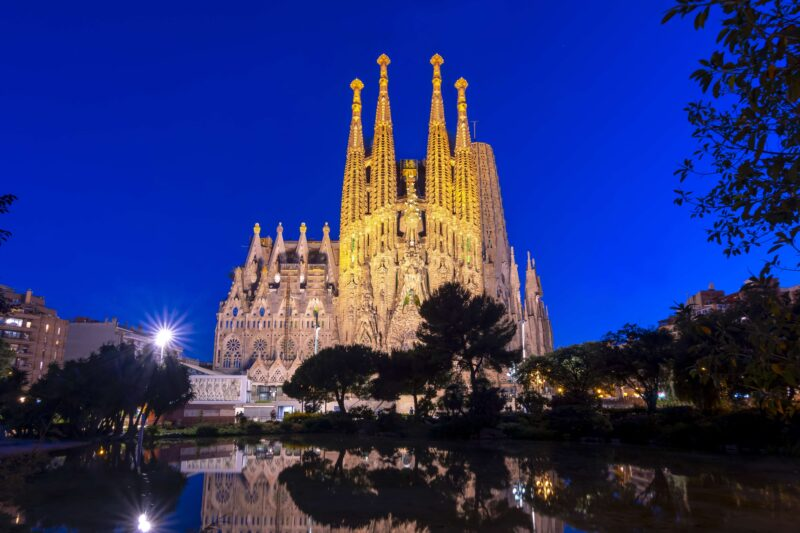
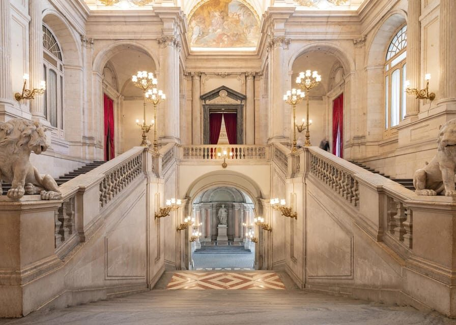
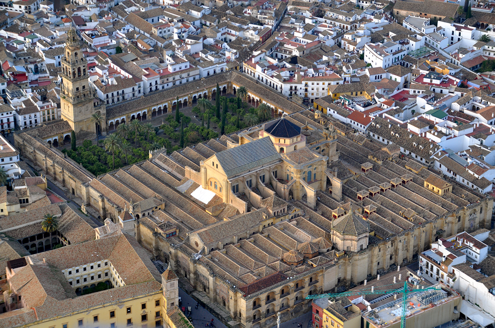
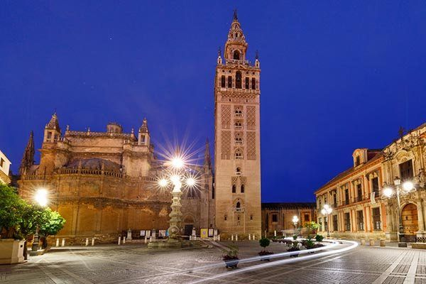
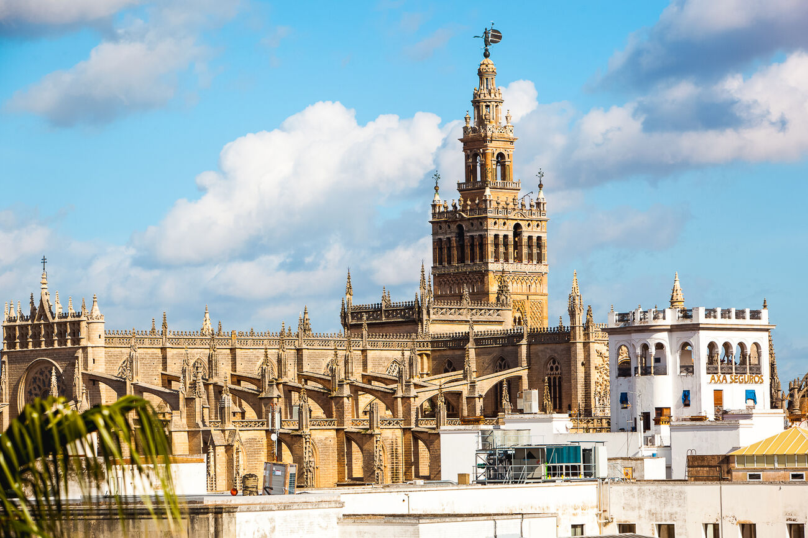
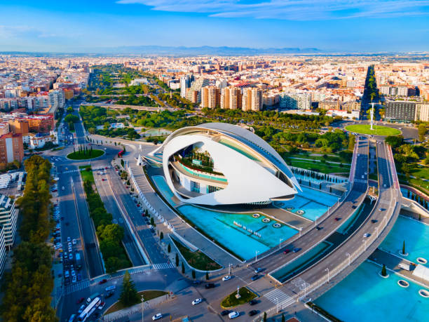

Sagrada Família, Barcelona


The Sagrada Família is one of the most extraordinary landmarks in the world, rising above Barcelona as a symbol of creativity and
faith. Designed by the visionary architect Antoni Gaudí, construction began in 1882 and continues to this day, making it one of the
longest-running building projects in history. Its breathtaking façades and towering spires are inspired by nature, light, and geometry,
creating an experience unlike any other cathedral. Inside, colorful stained glass fills the space with shifting light, giving visitors
a sense of calm and wonder. A must-see in Spain, the Sagrada Família is more than a church — it’s a living masterpiece and the heart
of Barcelona’s artistic soul.
Best time to visit:
Early morning or late afternoon to avoid crowds and enjoy the light through the stained-glass windows.
Opening hours:
Daily, 9:00–20:00 (varies seasonally).
Entry:
Ticket required (€26+ for basic entry; guided or tower access costs extra).
SEE MAP
Royal Palace of Madrid, Madrid


The Royal Palace of Madrid is one of the largest and most impressive royal palaces in Europe, standing proudly in the heart of Spain’s
capital. Built in the 18th century, it showcases the grandeur of Spanish monarchy through its elegant architecture, lavish halls, and
richly decorated rooms. Visitors can explore magnificent spaces filled with royal art, historic furniture, and stunning chandeliers,
offering a glimpse into centuries of Spanish history. Although the royal family no longer lives there, the palace remains the official
residence for state ceremonies and events. A visit to the Royal Palace is more than a tour — it’s a journey into Spain’s royal past
and timeless elegance.
Best time to visit:
Morning or early afternoon to enjoy less crowded rooms and the ceremonial changing of the guard.
Opening hours:
Daily, 10:00–20:00 (April–September) / 10:00–18:00 (October–March); last entry 30 min before closing.
Entry:
Ticket required (€13–€15); some areas free during special hours or events.
SEE MAP
Alhambra, Granada
The Alhambra in Granada is one of Spain’s most breathtaking and historically rich landmarks, standing proudly above the city since the
13th century. Originally built as a fortress and royal palace of the Nasrid dynasty, it represents the height of Islamic art and
architecture in Europe. Visitors can wander through its intricate courtyards, elegant halls, and the famous Generalife gardens,
filled with fountains and stunning views of Granada. Every detail — from carved arches to colorful tiles — tells a story of beauty,
power, and cultural fusion. A must-see in southern Spain, the Alhambra is more than a monument; it’s a journey through history and
timeless elegance.
Best time to visit:
Early morning or late afternoon to enjoy cooler temperatures and avoid crowds.
Opening hours:
Daily, 8:30–20:00 (summer) / 8:30–18:00 (winter); last entry 30–60 min before closing.
Entry:
Ticket required (€14–€18 for general visit); advance booking recommended, especially in high season.
SEE MAP
The Mosque of Córdoba


The Mosque of Córdoba is one of Spain’s most extraordinary and historically rich landmarks. Originally built in the 8th century as a
grand Islamic mosque, it later became a cathedral, creating a unique blend of Moorish and Christian architecture. Inside, visitors are
greeted by a mesmerizing forest of red-and-white arches, intricate columns, and stunning details that reflect centuries of cultural
exchange. The peaceful courtyard and ornate interior make it a place of reflection and wonder. More than just a monument, the Mosque
of Córdoba stands as a powerful symbol of Spain’s diverse history and timeless beauty.
Best time to visit:
Early morning to avoid crowds and enjoy the serene atmosphere.
Opening hours:
Daily, usually 8:30–19:00 (hours can vary by season).
Entry:
Ticket required (€10–€12); some areas may allow free access during prayer times.
SEE MAP
La Giralda, Sevilla


La Giralda is one of Seville’s most iconic landmarks, originally built as the minaret for the city’s Great Mosque in the 12th century
and later converted into the bell tower of Seville Cathedral. Rising gracefully above the city, it offers breathtaking panoramic views
from its ramps and terraces. Visitors can admire the intricate Moorish details, Renaissance additions, and the harmonious blend of
architectural styles that tell the story of Seville’s rich history. More than just a tower, La Giralda is a symbol of the city’s
cultural fusion and timeless charm.
Best time to visit:
Early morning to avoid heat and crowds, or late afternoon for golden-hour views.
Opening hours:
Monday to Saturday 11:00–17:00; Sundays 14:30–18:00 (check for special closures).
Entry:
Ticket required to climb the tower (€9–€10); the cathedral itself has a separate entrance fee.
SEE MAP
City of Arts and Sciences, Valencia


The City of Arts and Sciences in Valencia is a striking architectural and cultural complex, designed by Santiago Calatrava and Félix Candela.
It combines futuristic design with interactive experiences, housing a science museum, an IMAX cinema, an opera house, and Europe’s
largest aquarium. Visitors can wander through its sleek bridges, reflective pools, and unique structures, making it a must-see for
architecture lovers and families alike. More than just a collection of buildings, the City of Arts and Sciences represents Valencia’s
innovation, creativity, and passion for culture.
Best time to visit:
Spring or autumn mornings to avoid crowds; late afternoon for sunset reflections on the water.
Opening hours:
Daily, usually 10:00–19:00 (varies by building); each museum/attraction may have slightly different hours.
Entry:
Ticket required for individual buildings (€8–€38 depending on venue and age). Some outdoor areas and gardens are free to explore.
SEE MAP